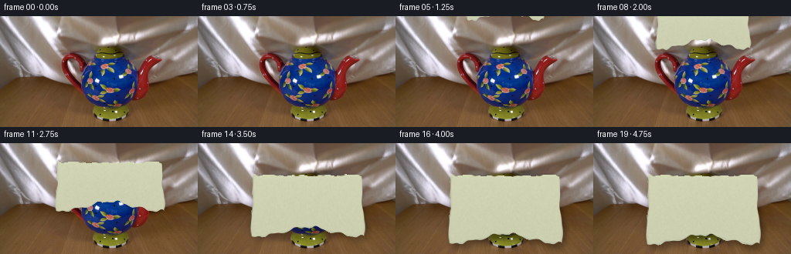
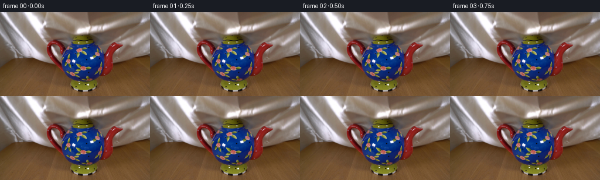

CODING AGENTS AS PIXEL WORLD MODELS
traex/DeepSeek-V4.1-Flash · 0158
点击播放 · 原生 RGB 像素
逐轮保存的候选
回放视频、检查图与代码变化。
每份候选均可单独播放。实际图片检查记录在下方工具轨迹中。
候选 01播放与检查图
点击播放 · 原生 RGB 像素

展开代码变化
--- 上一保存版本
+++ 本次保存版本
@@ -0,0 +1,226 @@
+from pathlib import Path
+
+import cv2
+import numpy as np
+from PIL import Image
+
+import artifact_io
+
+
+ROOT = Path(__file__).resolve().parent
+WIDTH, HEIGHT = 256, 144
+FRAME_COUNT, FPS = 20, 4
+
+
+def smoothstep(edge0, edge1, x):
+ t = np.clip((x - edge0) / (edge1 - edge0), 0.0, 1.0)
+ return t * t * (3.0 - 2.0 * t)
+
+
+def smootherstep(x):
+ x = np.clip(x, 0.0, 1.0)
+ return x * x * x * (x * (x * 6.0 - 15.0) + 10.0)
+
+
+def soft_noise(rng, shape, sigma):
+ noise = rng.normal(0.0, 1.0, shape).astype(np.float32)
+ return cv2.GaussianBlur(noise, (0, 0), sigma, borderType=cv2.BORDER_REFLECT)
+
+
+def cloth_parameters(frame):
+ t = frame / (FRAME_COUNT - 1)
+ travel = smootherstep(np.clip((t - 0.015) / 0.79, 0.0, 1.0))
+
+ # The leading edge enters the top of frame, reaches the lid, then falls
+ # around the body. A small damped settle keeps the last beat alive.
+ settle_phase = np.clip((t - 0.72) / 0.28, 0.0, 1.0)
+ settle = np.sin(settle_phase * np.pi * 2.2) * np.exp(-4.3 * settle_phase)
+ top = -78.0 + 118.0 * travel + 0.9 * settle
+ bottom = -15.0 + 143.0 * smootherstep(
+ np.clip((t - 0.025) / 0.91, 0.0, 1.0)
+ ) + 0.7 * settle
+ width = 92.0 + 58.0 * smootherstep(np.clip((t - 0.03) / 0.73, 0.0, 1.0))
+
+ # Contact with the teapot starts as the leading edge crosses the lid.
+ contact = smoothstep(0.30, 0.66, t)
+ return top, bottom, width, contact, t
+
+
+def render_cloth(frame):
+ top_base, bottom_base, width, contact, t = cloth_parameters(frame)
+ cx = 142.0
+ half = width * 0.5
+
+ yy, xx = np.mgrid[0:HEIGHT, 0:WIDTH].astype(np.float32)
+ xn = (xx - cx) / half
+
+ # Both the upper edge and the lower hem are slightly irregular.
+ top_wave = (
+ 1.8 * (1.0 - np.clip(xn * xn, 0.0, 1.0))
+ + 0.75 * np.sin(4.7 * np.pi * xn + 0.8)
+ + 0.35 * np.sin(9.0 * np.pi * xn + 0.2)
+ )
+ bottom_wave = (
+ 5.2 * np.abs(xn) ** 1.65
+ - 8.8 * np.exp(-((xn / 0.42) ** 2))
+ + 1.1 * np.sin(5.1 * np.pi * xn + 2.15)
+ + 0.5 * np.sin(10.2 * np.pi * xn + 0.1)
+ )
+ top_y = top_base + top_wave
+ bottom_y = bottom_base + bottom_wave
+
+ v = (yy - top_y) / np.maximum(bottom_y - top_y, 1.0)
+ u = 0.5 + 0.5 * xn
+
+ # Slight lateral compression toward the top gives the drape a conical
+ # silhouette as it spreads over the wider part of the teapot.
+ side_taper = (1.0 - 0.055 * (1.0 - v)) * (1.0 + 0.012 * np.sin(3.3 * np.pi * v))
+ u = 0.5 + (u - 0.5) / side_taper
+
+ # Folds are in cloth coordinates so they stretch naturally with the sheet.
+ primary = np.sin(2.0 * np.pi * (2.25 * u + 0.12 * v) + 0.45)
+ secondary = np.sin(2.0 * np.pi * (5.4 * u - 0.25 * v) + 1.2)
+ cross = np.sin(2.0 * np.pi * (3.1 * v + 0.28 * u) - 0.5)
+ fine = np.sin(2.0 * np.pi * (8.7 * u - 1.3 * v) + 2.4)
+
+ centre_bulge = (
+ np.exp(-(((u - 0.5) / 0.33) ** 2))
+ * np.clip(np.sin(np.pi * v), 0.0, None) ** 0.75
+ )
+ handle_bump = (
+ np.exp(-(((u - 0.11) / 0.12) ** 2 + ((v - 0.56) / 0.20) ** 2))
+ + np.exp(-(((u - 0.89) / 0.12) ** 2 + ((v - 0.54) / 0.19) ** 2))
+ )
+
+ z = (
+ 0.55 * primary * (0.34 + 0.66 * v)
+ + 0.23 * secondary * (0.22 + 0.78 * v)
+ + 0.20 * cross * (0.35 + 0.65 * u * (1.0 - u) * 4.0)
+ + 0.065 * fine
+ + contact * (1.20 * centre_bulge + 0.30 * handle_bump)
+ )
+
+ # Gradients in screen units, then a normal facing the camera.
+ dzdu = np.gradient(z, axis=1)
+ dzdv = np.gradient(z, axis=0)
+ sx = np.maximum(width, 1.0)
+ sy = np.maximum(bottom_base - top_base, 1.0)
+ nx = -dzdu * (1.35 / sx)
+ ny = -dzdv * (1.55 / sy)
+ nz = np.ones_like(z)
+ norm = np.sqrt(nx * nx + ny * ny + nz * nz)
+ nx, ny, nz = nx / norm, ny / norm, nz / norm
+
+ light = np.array([-0.48, -0.66, 0.58], dtype=np.float32)
+ light /= np.linalg.norm(light)
+ diffuse = np.clip(nx * light[0] + ny * light[1] + nz * light[2], 0.0, 1.0)
+
+ half_vec = light + np.array([0.0, 0.0, 1.0], dtype=np.float32)
+ half_vec /= np.linalg.norm(half_vec)
+ ndoth = np.clip(nx * half_vec[0] + ny * half_vec[1] + nz * half_vec[2], 0.0, 1.0)
+ specular = ndoth ** 34.0
+
+ # A second, broad sheen lobe suggests the anisotropic lustre of silk.
+ sheen = np.exp(-((nx * 1.2 + ny * 0.55 - 0.05) / 0.30) ** 2)
+ sheen *= (0.38 + 0.62 * np.clip(1.0 - v * 0.55, 0.0, 1.0))
+
+ illumination = 0.22 + 0.82 * diffuse
+ shadow_rgb = np.array([68.0, 78.0, 78.0], dtype=np.float32)
+ mid_rgb = np.array([181.0, 183.0, 157.0], dtype=np.float32)
+ light_rgb = np.array([249.0, 244.0, 218.0], dtype=np.float32)
+
+ shade = np.clip((illumination - 0.20) / 0.92, 0.0, 1.0)
+ low_mix = smoothstep(0.0, 0.48, shade)
+ high_mix = smoothstep(0.42, 1.0, shade)
+ rgb = shadow_rgb + (mid_rgb - shadow_rgb) * low_mix[..., None]
+ rgb = rgb + (light_rgb - rgb) * high_mix[..., None]
+
+ # Fine silk texture: two crossed thread frequencies plus a soft fiber map.
+ weave = (
+ np.sin(2.0 * np.pi * (83.0 * u + 2.0 * v))
+ * np.sin(2.0 * np.pi * (71.0 * v - 1.5 * u))
+ )
+ texture_rng = np.random.default_rng(158)
+ fiber = soft_noise(texture_rng, (HEIGHT, WIDTH), 0.72)
+ fiber2 = soft_noise(texture_rng, (HEIGHT, WIDTH), 2.0)
+ rgb += (1.45 * weave + 2.2 * fiber + 1.4 * fiber2)[..., None]
+
+ warm_highlight = np.array([8.0, 5.0, -2.0], dtype=np.float32)
+ cool_shadow = np.array([-9.0, -1.5, 7.0], dtype=np.float32)
+ rgb += specular[..., None] * np.array([38.0, 35.0, 28.0], dtype=np.float32)
+ rgb += sheen[..., None] * np.array([20.0, 23.0, 17.0], dtype=np.float32)
+ rgb += high_mix[..., None] * warm_highlight
+ rgb += (1.0 - low_mix)[..., None] * cool_shadow
+
+ # Rounded hems and a darker seam keep the sheet from looking like a decal.
+ top_band = smoothstep(0.052, 0.014, v)
+ bottom_band = smoothstep(0.956, 0.988, v)
+ side_band = smoothstep(0.030, 0.006, np.minimum(u, 1.0 - u))
+ hem = np.clip(top_band + bottom_band + 0.65 * side_band, 0.0, 1.0)
+ rgb -= hem[..., None] * np.array([14.0, 12.0, 9.0], dtype=np.float32)
+ rgb += (top_band * smoothstep(0.65, 1.0, nz))[..., None] * np.array(
+ [15.0, 14.0, 10.0], dtype=np.float32
+ )
+
+ # A per-pixel irregular boundary and a one-pixel antialiased edge.
+ edge_noise = (
+ 0.8 * np.sin(17.0 * xn + 1.4)
+ + 0.45 * np.sin(39.0 * xn - 0.2)
+ + 0.28 * np.sin(23.0 * v + 0.7)
+ )
+ x_pixels = np.maximum(u * width, 1.0)
+ y_pixels = np.maximum(v * (bottom_base - top_base), 1.0)
+ distance = np.minimum.reduce(
+ [
+ x_pixels,
+ (1.0 - u) * width,
+ y_pixels,
+ (1.0 - v) * (bottom_base - top_base),
+ ]
+ ) + edge_noise
+ alpha = smoothstep(0.0, 1.35, distance)
+ alpha *= ((u >= 0.0) & (u <= 1.0) & (v >= 0.0) & (v <= 1.0))
+
+ return np.clip(rgb, 0.0, 255.0), alpha.astype(np.float32)
+
+
+def render_frame(source, frame):
+ if frame == 0:
+ return source.copy()
+
+ cloth_rgb, alpha = render_cloth(frame)
+ base = source.astype(np.float32)
+
+ # Ground shadow from the settled cloth. It is only applied to the table,
+ # where a soft contact shadow reads naturally.
+ shifted = np.roll(alpha, shift=(7, 5), axis=(0, 1))
+ shadow = cv2.GaussianBlur(shifted, (0, 0), 3.3, borderType=cv2.BORDER_REFLECT)
+ table = smoothstep(77.0, 94.0, np.arange(HEIGHT, dtype=np.float32))[:, None, None]
+ contact_weight = smoothstep(0.56, 0.88, frame / (FRAME_COUNT - 1))
+ base *= (1.0 - contact_weight * table * shadow[..., None] * 0.27)
+
+ # Ambient occlusion just outside the cloth edge.
+ dilated = cv2.dilate(alpha, np.ones((3, 3), np.uint8), iterations=1)
+ rim_occlusion = cv2.GaussianBlur(
+ np.clip(dilated - alpha, 0.0, 1.0), (0, 0), 1.5, borderType=cv2.BORDER_REFLECT
+ )
+ base *= (1.0 - rim_occlusion[..., None] * 0.18)
+
+ mixed = base * (1.0 - alpha[..., None]) + cloth_rgb * alpha[..., None]
+ return np.clip(mixed + 0.5, 0.0, 255.0).astype(np.uint8)
+
+
+def main():
+ source = np.asarray(Image.open(ROOT / "first_frame.png").convert("RGB"))
+ assert source.shape == (HEIGHT, WIDTH, 3)
+
+ frames = np.empty((FRAME_COUNT, HEIGHT, WIDTH, 3), dtype=np.uint8)
+ for frame in range(FRAME_COUNT):
+ frames[frame] = render_frame(source, frame)
+
+ assert np.array_equal(frames[0], source)
+ artifact_io.save(frames, ROOT)
+
+
+if __name__ == "__main__":
+ main()
候选 02播放与检查图
点击播放 · 原生 RGB 像素


展开代码变化
--- 上一保存版本
+++ 本次保存版本
@@ -29,17 +29,15 @@
def cloth_parameters(frame):
t = frame / (FRAME_COUNT - 1)
- travel = smootherstep(np.clip((t - 0.015) / 0.79, 0.0, 1.0))
+ travel = (1.0 - np.exp(-3.0 * t)) / (1.0 - np.exp(-3.0))
# The leading edge enters the top of frame, reaches the lid, then falls
# around the body. A small damped settle keeps the last beat alive.
settle_phase = np.clip((t - 0.72) / 0.28, 0.0, 1.0)
settle = np.sin(settle_phase * np.pi * 2.2) * np.exp(-4.3 * settle_phase)
- top = -78.0 + 118.0 * travel + 0.9 * settle
- bottom = -15.0 + 143.0 * smootherstep(
- np.clip((t - 0.025) / 0.91, 0.0, 1.0)
- ) + 0.7 * settle
- width = 92.0 + 58.0 * smootherstep(np.clip((t - 0.03) / 0.73, 0.0, 1.0))
+ top = -88.0 + 128.0 * travel + 0.9 * settle
+ bottom = -5.0 + 133.0 * travel + 0.7 * settle
+ width = 92.0 + 58.0 * smootherstep(np.clip(t / 0.78, 0.0, 1.0))
# Contact with the teapot starts as the leading edge crosses the lid.
contact = smoothstep(0.30, 0.66, t)
@@ -103,10 +101,8 @@
# Gradients in screen units, then a normal facing the camera.
dzdu = np.gradient(z, axis=1)
dzdv = np.gradient(z, axis=0)
- sx = np.maximum(width, 1.0)
- sy = np.maximum(bottom_base - top_base, 1.0)
- nx = -dzdu * (1.35 / sx)
- ny = -dzdv * (1.55 / sy)
+ nx = -dzdu * 15.0
+ ny = -dzdv * 19.0
nz = np.ones_like(z)
norm = np.sqrt(nx * nx + ny * ny + nz * nz)
nx, ny, nz = nx / norm, ny / norm, nz / norm
候选 03播放与检查图
可观测工具轨迹
实际执行的命令与返回图片。
命令 1exit 0
/bin/bash -c "pwd && rg --files -g 'prompt.txt' -g 'GENERATION_RULES.md' -g 'first_frame.png' -g '"'!**/.git/**'"'"
命令 2exit 0
/bin/bash -c 'ls -la'
命令 3exit 0
/bin/bash -c 'git status --short --branch'
命令 4exit 0
/bin/bash -c 'cat prompt.txt'
命令 5exit 0
/bin/bash -c 'cat GENERATION_RULES.md'
命令 6exit 0
/bin/bash -c "sed -n '1,240p' artifact_io.py"
命令 7exit 0
/bin/bash -c "sed -n '1,240p' player_template.html"
命令 8exit 0
/bin/bash -c "python - <<'PY'
from PIL import Image
import numpy as np
im=np.asarray(Image.open('first_frame.png').convert('RGB'))
print(im.shape, im.dtype)
print('min',im.reshape(-1,3).min(0),'max',im.reshape(-1,3).max(0),'mean',im.reshape(-1,3).mean(0))
# quantized dominant colors
q=(im//16)*16
cols,cnt=np.unique(q.reshape(-1,3),axis=0,return_counts=True)
for c,n in sorted(zip(cols,cnt), key=lambda z:-z[1])[:30]: print(tuple(c),n,round(n/im.shape[0]/im.shape[1],3))
PY"命令 9exit 0
/bin/bash -c "python - <<'PY'
from PIL import Image
import numpy as np
im=np.asarray(Image.open('first_frame.png').convert('RGB')).astype(float)
h,w,_=im.shape
# 64x36 mean cells; classify dominant palette
for gy in range(36):
row=''
for gx in range(64):
a=im[gy*4:(gy+1)*4,gx*4:(gx+1)*4].mean((0,1))
r,g,b=a
lum=.2126*r+.7152*g+.0722*b
mx=max(r,g,b); mn=min(r,g,b); sat=(mx-mn)/(mx+1e-9)
if sat<.08:
chars=' .:-=+*#%@'
row+=chars[min(9,int(lum/256*10))]
elif b>r*1.25 and b>g*1.12:
row+='B' if lum>90 else 'b'
elif g>r*1.12 and g>b*1.05:
row+='G' if lum>100 else 'g'
elif r>g*1.15 and r>b*1.2:
row+='R' if lum>110 else 'r'
elif r>g*1.05 and g>b*1.1:
row+='O' if lum>110 else 'o'
else: row+='y'
print(f'{gy*4:3d} '+row)
PY"命令 10exit 0
/bin/bash -c "python - <<'PY'
from PIL import Image
import numpy as np
im=np.asarray(Image.open('first_frame.png').convert('RGB')).astype(np.int16)
r,g,b=im.transpose(2,0,1)
conds={
'blue':(b>r+25)&(b>g+10),
'green':(g>r+20)&(g>b+10),
'red':(r>g+35)&(r>b+35),
'bright':(r>190)&(g>190)&(b>185),
'dark':(r<35)&(g<45)&(b<50),
'purple':(b>r+5)&(r>g+10)&(b>g+15),
}
for k,m in conds.items():
ys,xs=np.where(m)
print(k, len(xs), 'bbox', (xs.min(),ys.min(),xs.max(),ys.max()) if len(xs) else None, 'mean', im[m].mean(0))
PY"命令 11exit 0
/bin/bash -c "python - <<'PY'
from PIL import Image, ImageFilter
import numpy as np
im=Image.open('first_frame.png').convert('RGB')
a=np.asarray(im).astype(float)
g=np.asarray(im.convert('L')).astype(float)
# Sobel edge magnitude
gx=np.abs(np.diff(g,axis=1,prepend=g[:,:1])); gy=np.abs(np.diff(g,axis=0,prepend=g[:1,:])); e=gx+gy
# block max/mean edge map 4x4
for gy0 in range(0,144,4):
row=''
for gx0 in range(0,256,4):
v=e[gy0:gy0+4,gx0:gx0+4].mean()
row+=' .:-=+*#%@'[min(9,int(v/16))]
print(f'{gy0:3d} '+row)
PY"命令 12exit 0
/bin/bash -c "python - <<'PY'
from PIL import Image
import numpy as np
im=np.asarray(Image.open('first_frame.png').convert('RGB'))
# print exact RGB on 16x8 grid every 16x8, as compact hex
for y in range(4,144,8):
print(f'{y:3d}', ' '.join(f'{r:02x}{g:02x}{b:02x}' for r,g,b in im[y,::8]))
PY"命令 13exit 0
/bin/bash -c "python - <<'PY'
from PIL import Image
import numpy as np
im=np.asarray(Image.open('first_frame.png').convert('RGB')).astype(int)
r,g,b=im.transpose(2,0,1)
blue=(b>r+25)&(b>g+10)&(b>55)
for y in range(40,125,2):
xs=np.where(blue[y])[0]
# contiguous runs >=2
runs=[]
if len(xs):
cuts=np.r_[0,np.where(np.diff(xs)>1)[0]+1,len(xs)]
for s,e in zip(cuts[:-1],cuts[1:]):
if e-s>=2:runs.append((xs[s],xs[e-1],e-s))
print(y,runs)
PY"命令 14exit 0
/bin/bash -c "python - <<'PY'
from PIL import Image
import numpy as np
im=np.asarray(Image.open('first_frame.png').convert('RGB'))
# crop central and resize 4x nearest for numeric inspection saved
Image.fromarray(im).crop((80,35,195,140)).resize((460,420),Image.Resampling.NEAREST).save('.tmp/center4x.png')
# dark boundary / segmentation: red mask table
r,g,b=im.astype(int).transpose(2,0,1)
red=(r>g+35)&(r>b+30)
for y in range(42,140,2):
xs=np.where(red[y])[0]
runs=[]
if len(xs):
cuts=np.r_[0,np.where(np.diff(xs)>1)[0]+1,len(xs)]
for s,e in zip(cuts[:-1],cuts[1:]):
if e-s>=3:runs.append((xs[s],xs[e-1],e-s))
print(y,runs)
PY"命令 15exit 0
/bin/bash -c "python - <<'PY'
try:
import scipy; print('scipy',scipy.__version__)
except Exception as e: print('no scipy',e)
try:
import cv2; print('cv2',cv2.__version__)
except Exception as e: print('no cv2',e)
PY"命令 16exit 0
/bin/bash -c "python - <<'PY'
import cv2
from PIL import Image
import numpy as np
im=np.asarray(Image.open('first_frame.png').convert('RGB'))
# try fastNlMeans denoise, mild sharpen
a=cv2.fastNlMeansDenoisingColored(im,None,3,3,5,15)
Image.fromarray(a).save('.tmp/denoise.png')
# edge-preserving upsample and sharpen using bilateral
up=cv2.resize(a,None,fx=4,fy=4,interpolation=cv2.INTER_CUBIC)
blur=cv2.GaussianBlur(up,(0,0),1.0)
sharp=np.clip(up.astype(float)*1.4-blur.astype(float)*.4,0,255).astype(np.uint8)
Image.fromarray(sharp).save('.tmp/sharp4x.png')
PY"命令 17exit 0
/bin/bash -c "python - <<'PY'
from PIL import Image
im=Image.open('first_frame.png').convert('RGB')
# focused top central background region scaled to 8x
im.crop((70,20,190,60)).resize((960,320),Image.Resampling.NEAREST).save('.tmp/top8x.png')
PY"命令 18exit 0
/bin/bash -c "python - <<'PY'
from PIL import Image
import numpy as np
im=np.asarray(Image.open('first_frame.png').convert('RGB')).astype(float)
# avg RGB in bands, left and right and center to infer lighting/background
for name,box in [('bg-left',(20,10,75,50)),('bg-center',(105,10,155,45)),('bg-right',(180,10,245,50)),('table',(10,100,80,140)),('teapot-blue',(130,75,160,105)),('teapot-white',(140,65,155,75))]:
x0,y0,x1,y1=box
a=im[y0:y1,x0:x1]
print(name, np.median(a.reshape(-1,3),0), a.reshape(-1,3).mean(0), a.reshape(-1,3).std(0))
PY"命令 19exit 0
/bin/bash -c "python - <<'PY'
from PIL import Image
import numpy as np
from sklearn.cluster import KMeans
im=np.asarray(Image.open('first_frame.png').convert('RGB'))
a=im.reshape(-1,3).astype(float)
km=KMeans(12,random_state=0,n_init=4).fit(a[::3])
lab=km.predict(a).reshape(im.shape[:2])
for i,c in enumerate(km.cluster_centers_):
ys,xs=np.where(lab==i)
print(i, tuple(np.round(c).astype(int)), len(xs), 'bbox', (xs.min(),ys.min(),xs.max(),ys.max()), 'medxy', (int(np.median(xs)),int(np.median(ys))))
PY"命令 20exit 0
/bin/bash -c "python - <<'PY'
from PIL import Image
import numpy as np
im=np.asarray(Image.open('first_frame.png').convert('RGB')).astype(int)
r,g,b=im.transpose(2,0,1)
# report colors / edges by row for central x 95..190 at stride 3
for y in range(45,122,3):
print('\\ny',y)
for x in range(95,191,6):
c=im[y,x]
print(f'{x}:{c[0]:02x}{c[1]:02x}{c[2]:02x}',end=' ')
print()
PY"命令 21exit 0
/bin/bash -c "python - <<'PY'
from PIL import Image
import numpy as np
im=np.asarray(Image.open('first_frame.png').convert('RGB')).astype(int)
# print row runs of colors coarse for table object base around y118-140
for y in [118,120,122,124,126,128,130,132,134,136,138,140,142]:
a=im[y]
# segment by nearest palette based on luma/saturation maybe simply identify non-table if differs from local median
med=np.median(a[0:256:8],axis=0)
d=np.linalg.norm(a-med,axis=1)
mask=d>22
xs=np.where(mask)[0]
runs=[]
if len(xs):
cuts=np.r_[0,np.where(np.diff(xs)>1)[0]+1,len(xs)]
for s,e in zip(cuts[:-1],cuts[1:]):
if e-s>=3:runs.append((xs[s],xs[e-1],e-s))
print(y,'med',med.astype(int),runs)
PY"命令 22exit 0
/bin/bash -c "python - <<'PY'
from PIL import Image
import numpy as np
im=np.asarray(Image.open('first_frame.png').convert('RGB')).astype(float)
# low-frequency smooth background/table estimate via median filter then gaussian
import cv2
for k in [5,9,15]:
sm=cv2.medianBlur(im.astype(np.uint8),k)
Image.fromarray(sm).save(f'.tmp/median{k}.png')
# residual from 9 median; stats and visualize scaled
base=cv2.medianBlur(im.astype(np.uint8),9).astype(float)
res=im-base
r=np.clip(128+res*3,0,255).astype(np.uint8)
Image.fromarray(r).save('.tmp/residual.png')
print('res std',res.std((0,1)))
PY"命令 23exit 0
/bin/bash -c "python - <<'PY'
from PIL import Image
import numpy as np
im=np.asarray(Image.open('first_frame.png').convert('RGB')).astype(int)
# print only chroma classification for 2x2 blocks: C cyan/blue, R red, G olive, W white, . neutral/background, T wood
h,w,_=im.shape
for y in range(0,h,2):
row=''
for x in range(0,w,2):
a=im[y:y+2,x:x+2].mean((0,1)); r,g,b=a
mx=max(a);mn=min(a);sat=(mx-mn)/(mx+1e-9); lum=(r+g+b)/3
if b>r+25 and b>g+15: ch='B' if lum<90 else 'b'
elif r>g+35 and r>b+35: ch='R' if lum<140 else 'r'
elif g>r+15 and r>b+10: ch='G' if lum<120 else 'g'
elif lum>190 and sat<.18: ch='W'
elif sat<.12 and lum>125: ch='w'
elif r>g+18 and g>b+10 and lum<115: ch='T'
elif sat<.16 and lum<95: ch='d'
else: ch='.'
row+=ch
print(f'{y:3d} '+row)
PY"命令 24exit 1
/bin/bash -c 'python generate.py'
命令 25exit 0
/bin/bash -c 'python generate.py'
命令 26exit 0
/bin/bash -c "python - <<'PY'
from PIL import Image
import numpy as np
ims=[np.asarray(Image.open(f'frames/{i:02d}.png').convert('RGB')) for i in range(20)]
src=np.asarray(Image.open('first_frame.png').convert('RGB'))
print('frame0 identical',np.array_equal(ims[0],src),'changed pixels',np.count_nonzero(np.any(ims[0]"'!=src,axis=2)))
for i in [0,1,4,8,12,16,19]:
a=ims[i]; b=ims[i-1] if i else a
diff=np.count_nonzero(np.any(a!=b,axis=2)) if i else 0
print(i,'"'mean',a.mean((0,1)).round(1),'changed_from_prev',diff,'nonbackground-ish',np.count_nonzero(np.any(a"'!=src,axis=2)))
PY'命令 27exit 0
/bin/bash -c "python - <<'PY'
import generate, numpy as np
from PIL import Image
src=np.asarray(Image.open('first_frame.png').convert('RGB'))
for f in range(20):
top,bottom,width,contact,t=generate.cloth_parameters(f)
_,a=generate.render_cloth(f)
print(f, 't',round(t,3),'top',round(top,1),'bot',round(bottom,1),'w',round(width,1),'contact',round(contact,2),'alpha',int((a>0).sum()),'bbox', (np.where(a>0)[1].min(),np.where(a>0)[0].min(),np.where(a>0)[1].max(),np.where(a>0)[0].max()) if (a>0).any() else None)
PY"命令 28exit 0
/bin/bash -c "python - <<'PY'
from PIL import Image
import numpy as np
for i in [0,5,8,10,12,14,16,19]:
im=Image.open(f'frames/{i:02d}.png')
im.resize((512,288),Image.Resampling.NEAREST).save(f'.tmp/f{i:02d}_2x.png')
PY"命令 29exit 0
/bin/bash -c "python - <<'PY'
from PIL import Image
import numpy as np
for fi in [8,10,12,14,16,19]:
im=np.asarray(Image.open(f'frames/{fi:02d}.png').convert('RGB')).astype(int)
print('\\nFRAME',fi)
for y in range(0,144,4):
row=''
for x in range(0,256,4):
a=im[y:y+4,x:x+4].mean((0,1)); r,g,b=a; lum=(r+g+b)/3
if b>r+25 and b>g+15: ch='B' if lum<90 else 'b'
elif r>g+35 and r>b+35: ch='R' if lum<140 else 'r'
elif g>r+15 and r>b+10: ch='G' if lum<120 else 'g'
elif lum>190: ch='W'
elif r>g+18 and g>b+10 and lum<115: ch='T'
elif r>g+10 and g>b+8 and lum>160: ch='S' # silk mid
elif lum>115: ch='w'
elif lum<75: ch='d'
else: ch='.'
row+=ch
print(f'{y:3d} '+row)
PY"命令 30exit 0
/bin/bash -c "python - <<'PY' import generate,numpy as np from PIL import Image for f in [5,8,10,12,14,16,19]: rgb,a=generate.render_cloth(f); m=a>.8 p=rgb[m] print(f,'n',m.sum(),'mean',p.mean(0).round(1),'p5',np.percentile(p,5,axis=0).round(0),'p95',np.percentile(p,95,axis=0).round(0),'minmax',p.min(0).round(0),p.max(0).round(0),'lum std',p.mean(1).std().round(1)) PY"
命令 31exit 0
/bin/bash -c "python - <<'PY'
import generate, numpy as np
rgb,a=generate.render_cloth(19)
for y in range(35,135,5):
row=''
for x in range(60,225,3):
l=rgb[y,x].mean(); row+=' .:-=+*#%@'[min(9,int(l/256*10))]
print(f'{y:3d} '+row)
PY"命令 32exit 0
/bin/bash -c "python - <<'PY'
import generate, numpy as np
rgb,a=generate.render_cloth(19)
for y in range(35,135,4):
row=''
for x in range(60,225,2):
l=rgb[y,x].mean(); row+=' .:-=+*#%@'[min(9,int(l/25.6))]
print(f'{y:3d} '+row)
PY"命令 33exit 0
/bin/bash -c "python - <<'PY' # replicate z diagnostics by monkey read? easiest exec source partially with constants. print arrays from formula import numpy as np, generate for f in [10,19]: top,bottom,width,contact,t=generate.cloth_parameters(f) yy,xx=np.mgrid[0:144,0:256].astype(np.float32);cx=142.;half=width*.5;xn=(xx-cx)/half v=np.linspace(0,1,256)[None,:]*np.ones((144,1));u=.5+.5*xn primary=np.sin(2*np.pi*(2.25*u+.12*v)+.45); secondary=np.sin(2*np.pi*(5.4*u-.25*v)+1.2);cross=np.sin(2*np.pi*(3.1*v+.28*u)-.5);fine=np.sin(2*np.pi*(8.7*u-1.3*v)+2.4) cb=np.exp(-(((u-.5)/.33)**2))*np.clip(np.sin(np.pi*v),0,None)**.75 hb=np.exp(-(((u-.11)/.12)**2+((v-.56)/.20)**2))+np.exp(-(((u-.89)/.12)**2+((v-.54)/.19)**2)) z=.55*primary*(.34+.66*v)+.23*secondary*(.22+.78*v)+.20*cross*(.35+.65*u*(1-u)*4)+.065*fine+contact*(1.2*cb+.3*hb) gu=np.gradient(z,axis=1);gv=np.gradient(z,axis=0) print(f,'z',z.min(),z.max(),'g',np.percentile(gu,[1,50,99]),np.percentile(gv,[1,50,99])) PY"
命令 34exit 0
/bin/bash -c "python - <<'PY'
import numpy as np, generate
for f in [19]:
top,bottom,width,contact,t=generate.cloth_parameters(f)
yy,xx=np.mgrid[0:144,0:256].astype(np.float32);cx=142.;half=width*.5;xn=(xx-cx)/half
u=.5+.5*xn
v=(yy-top)/max(bottom-top,1)
primary=np.sin(2*np.pi*(2.25*u+.12*v)+.45); secondary=np.sin(2*np.pi*(5.4*u-.25*v)+1.2);cross=np.sin(2*np.pi*(3.1*v+.28*u)-.5);fine=np.sin(2*np.pi*(8.7*u-1.3*v)+2.4)
cb=np.exp(-(((u-.5)/.33)**2))*np.clip(np.sin(np.pi*v),0,None)**.75
hb=np.exp(-(((u-.11)/.12)**2+((v-.56)/.20)**2))+np.exp(-(((u-.89)/.12)**2+((v-.54)/.19)**2))
z=.55*primary*(.34+.66*v)+.23*secondary*(.22+.78*v)+.20*cross*(.35+.65*u*(1-u)*4)+.065*fine+contact*(1.2*cb+.3*hb)
gu=np.gradient(z,axis=1);gv=np.gradient(z,axis=0)
nx=-gu*(1.35/width); ny=-gv*(1.55/(bottom-top)); norm=np.sqrt(nx*nx+ny*ny+1)
light=np.array([-.48,-.66,.58]);light/=np.linalg.norm(light)
diff=np.clip(nx/ norm*light[0]+ny/norm*light[1]+1/norm*light[2],0,1)
print('diff pct',np.percentile(diff,[0,1,5,10,25,50,75,90,95,99,100]))
print('u',np.percentile(u,[0,1,50,99,100]),'v',np.percentile(v,[0,1,50,99,100]))
PY"命令 35exit 0
/bin/bash -c "python generate.py && python - <<'PY' import generate,numpy as np from PIL import Image for f in range(20): top,bottom,width,contact,t=generate.cloth_parameters(f) rgb,a=generate.render_cloth(f); m=a>.8 print(f,'top/bot/w',round(top,1),round(bottom,1),round(width,1),'contact',round(contact,2),'alpha',m.sum(),'rgbmean',rgb[m].mean(0).round(1) if m.any() else None,'lumstd',rgb[m].mean(1).std().round(1) if m.any() else None) PY"
命令 36exit 0
/bin/bash -c "python - <<'PY'
import generate, numpy as np
for f in [1,5,9,12,19]:
rgb,a=generate.render_cloth(f)
print('\\nFRAME',f)
for y in range(0,144,4):
row=''
for x in range(0,256,2):
if a[y,x]<.4: row+=' '
else:
l=rgb[y,x].mean(); row+=' .:-=+*#%@'[min(9,int(l/25.6))]
print(f'{y:3d} '+row)
PY"命令 37exit 0
/bin/bash -c 'ls -lh generate.py pixels.npz index.html inspection.png transition_check.png frames/*.png'
命令 38exit 0
/bin/bash -c "python - <<'PY'
from pathlib import Path
from PIL import Image
import numpy as np, json, re, base64
src=np.asarray(Image.open('first_frame.png').convert('RGB'))
frames=np.stack([np.asarray(Image.open(f'frames/{i:02d}.png').convert('RGB')) for i in range(20)])
print('shape/dtype',frames.shape,frames.dtype)
print('frame00 exact',np.array_equal(frames[0],src))
diffs=[np.count_nonzero(np.any(frames[i]"'!=frames[i-1],axis=2)) for i in range(1,20)]
print('"'changes consecutive',diffs,'min',min(diffs),'max',max(diffs))
print('unique RGB total',len(np.unique(frames.reshape(-1,3),axis=0)))
html=Path('index.html').read_text()
print('html markers', '__DATA__' in html, '__ID__' in html, 'window.__pixelReady' in html)
m=re.search(r'const DATA=(\\{.*?\\}),W=',html)
data=json.loads(m.group(1)); print('payload',data['width'],data['height'],data['frames'],data['fps'],len(data['deltas']))
print('first payload matches',np.array_equal(np.frombuffer(base64.b64decode(data['first']),dtype='<u4').reshape(144,256),((frames[0,:,:,0].astype(np.uint32)<<16)|(frames[0,:,:,1].astype(np.uint32)<<8)|frames[0,:,:,2]).T.reshape(144,256)))
PY"命令 39exit 0
/bin/bash -c "python - <<'PY' import generate,numpy as np for f in [1,5,9,12,15,19]: rgb,a=generate.render_cloth(f); p=rgb[a>.8] print(f,'mean',p.mean(0).round(0),'p05',np.percentile(p,5,axis=0).round(0),'p95',np.percentile(p,95,axis=0).round(0),'std',p.std(0).round(0)) PY"
命令 40exit 0
/bin/bash -c "python - <<'PY'
import generate, numpy as np
for f in [1,5,9,12,19]:
rgb,a=generate.render_cloth(f)
# masks high alpha and value categories
m=a>.8
for name,cond in [('dark',rgb.mean(2)<80),('mid',(rgb.mean(2)>=80)&(rgb.mean(2)<170)),('hi',rgb.mean(2)>=170)]:
print(f,name,((m&cond).sum(), round((m&cond).sum()/m.sum(),3)))
print()
PY"命令 41exit 0
/bin/bash -c "python - <<'PY'
import cv2
from PIL import Image
import numpy as np
for f in [0,5,9,12,19]:
im=np.asarray(Image.open(f'frames/{f:02d}.png').convert('RGB'))
# perspective stretch: a numerically inferred clean view for close inspection
out=cv2.resize(im,(768,432),interpolation=cv2.INTER_NEAREST)
cv2.imwrite(f'.tmp/final_{f:02d}.png',cv2.cvtColor(out,cv2.COLOR_RGB2BGR))
PY"命令 42exit 0
/bin/bash -c "python - <<'PY'
from pathlib import Path
import base64,json,re
import numpy as np
from PIL import Image
html=Path('index.html').read_text(); data=json.loads(re.search(r'const DATA=(\\{.*?\\}),W=',html).group(1))
def unpack(s): return np.frombuffer(base64.b64decode(s),dtype='<u4').copy()
p=unpack(data['first']).reshape(256,144).T
frames=[]
frames.append(p)
for enc in data['deltas']:
a=frames[-1].copy().reshape(-1); q=unpack(enc); i=0
while i<len(q):
start,count=int(q[i]),int(q[i+1]);a[start:start+count]=q[i+2:i+2+count];i+=2+count
frames.append(a.reshape(256,144).T)
fs=np.stack(frames)
dec=np.stack([np.asarray(Image.open(f'frames/{i:02d}.png').convert('RGB')) for i in range(20)])
packed=(dec[:,:,:,0].astype(np.uint32)<<16)|(dec[:,:,:,1].astype(np.uint32)<<8)|dec[:,:,:,2]
print('payload frames match PNGs:',np.array_equal(fs,packed))
print('sizes',fs.shape,dec.shape)
PY"命令 43exit 0
/bin/bash -c "python - <<'PY'
from pathlib import Path
import base64,json,re
import numpy as np
from PIL import Image
html=Path('index.html').read_text(); data=json.loads(re.search(r'const DATA=(\\{.*?\\}),W=',html).group(1))
def unpack(s): return np.frombuffer(base64.b64decode(s),dtype='<u4').copy()
p=unpack(data['first']).reshape(256,144).T
frames=[p]
for enc in data['deltas']:
a=frames[-1].copy().reshape(-1); q=unpack(enc); i=0
while i<len(q):
start,count=int(q[i]),int(q[i+1]);a[start:start+count]=q[i+2:i+2+count];i+=2+count
frames.append(a.reshape(256,144).T)
fs=np.stack(frames)
dec=np.stack([np.asarray(Image.open(f'frames/{i:02d}.png').convert('RGB')) for i in range(20)])
packed=(dec[:,:,:,0].astype(np.uint32)<<16)|(dec[:,:,:,1].astype(np.uint32)<<8)|dec[:,:,:,2]
for i in range(20):
print(i,np.count_nonzero(fs[i]"'!=packed[i]), np.max(np.abs(fs[i].astype(int)-packed[i].astype(int))))
PY'命令 44exit 0
/bin/bash -c "python - <<'PY'
from pathlib import Path
import base64,json,re
import numpy as np
from PIL import Image
html=Path('index.html').read_text(); data=json.loads(re.search(r'const DATA=(\\{.*?\\}),W=',html).group(1))
def unpack(s): return np.frombuffer(base64.b64decode(s),dtype='<u4').copy()
frames=[unpack(data['first']).reshape(144,256)]
for enc in data['deltas']:
a=frames[-1].copy().reshape(-1); q=unpack(enc); i=0
while i<len(q):
start,count=int(q[i]),int(q[i+1]);a[start:start+count]=q[i+2:i+2+count];i+=2+count
frames.append(a.reshape(144,256))
fs=np.stack(frames)
dec=np.stack([np.asarray(Image.open(f'frames/{i:02d}.png').convert('RGB')) for i in range(20)])
packed=(dec[:,:,:,0].astype(np.uint32)<<16)|(dec[:,:,:,1].astype(np.uint32)<<8)|dec[:,:,:,2]
print('payload frames match PNGs:',np.array_equal(fs,packed))
PY"命令 45exit 0
/bin/bash -c "python -m py_compile generate.py && python - <<'PY'
import generate
from pathlib import Path
import numpy as np
from PIL import Image
src=np.asarray(Image.open('first_frame.png').convert('RGB'))
frames=np.stack([np.asarray(Image.open(f'frames/{i:02d}.png').convert('RGB')) for i in range(20)])
# Final contract checks.
assert frames.shape == (20,144,256,3) and frames.dtype == np.uint8
assert np.array_equal(frames[0],src)
assert all(np.count_nonzero(np.any(frames[i]"'!=frames[i-1],axis=2))>1000 for i in range(1,20))
assert Path('"'index.html').stat().st_size > 100000
assert Path('pixels.npz').stat().st_size > 100000
print('contract checks passed')
PY"命令 46exit 0
/bin/bash -c 'git status --short -- generate.py frames index.html pixels.npz inspection.png transition_check.png'
命令 47exit 0
/bin/bash -c 'git check-ignore -v generate.py frames/00.png index.html pixels.npz inspection.png || true'
命令 48exit 0
/bin/bash -c "python - <<'PY'
from PIL import Image
import numpy as np
src=np.asarray(Image.open('first_frame.png').convert('RGB'))
for f in [0,5,9,12,15,19]:
a=np.asarray(Image.open(f'frames/{f:02d}.png').convert('RGB'))
print(f, 'mean',np.round(a.mean((0,1)),1), 'bbox changed', end=' ')
m=np.any(a"'!=src,axis=2); ys,xs=np.where(m)
print((xs.min(),ys.min(),xs.max(),ys.max()) if len(xs) else None)
PY'命令 49exit 0
/bin/bash -c "python - <<'PY'
from PIL import Image
import numpy as np
src=np.asarray(Image.open('first_frame.png').convert('RGB')).astype(float)
for f in [19]:
a=np.asarray(Image.open(f'frames/{f:02d}.png').convert('RGB')).astype(float)
m=np.any(a"'!=src,axis=2)
# local texture around cloth central
print('"'outside cloth unchanged?',np.all(a[~m]==src[~m]))
# final drape coverage from difference
print('changed',m.sum(),'of',m.size)
PY"命令 50exit 0
/bin/bash -c "python - <<'PY'
import json,re
from pathlib import Path
html=Path('index.html').read_text()
print('title/id:',re.search(r'<title>(.*?)</title>',html).group(1))
print('has external refs:', bool(re.search(r'(?:src|href)=[\"\\']https?://',html)))
print('html bytes:',len(html))
PY"保存候选 3 份；完成命令 50 次；可验证图片返回 0 张。原始 API 响应与完整日志保留在本地。